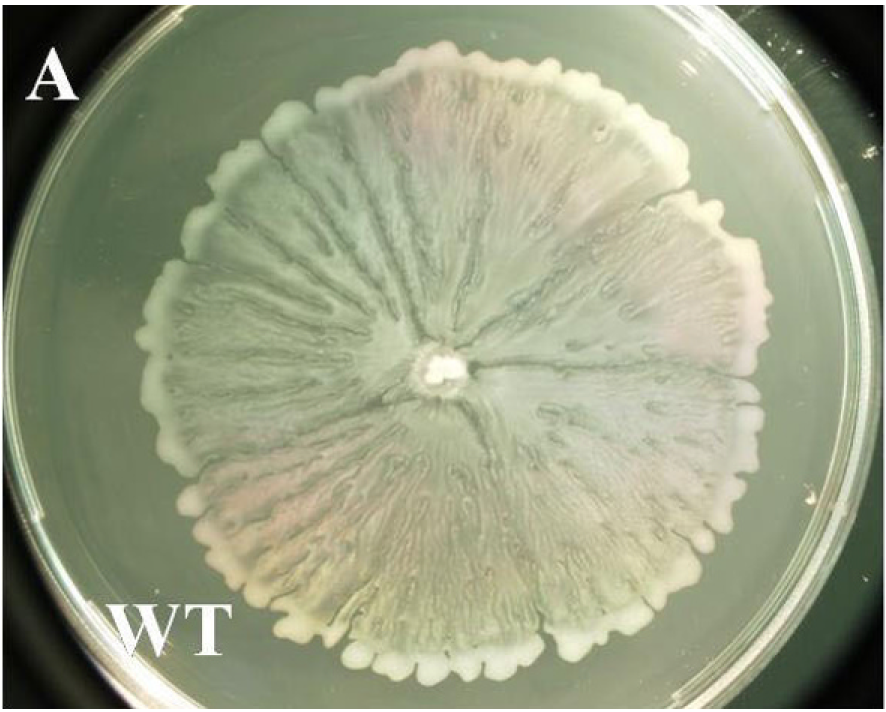
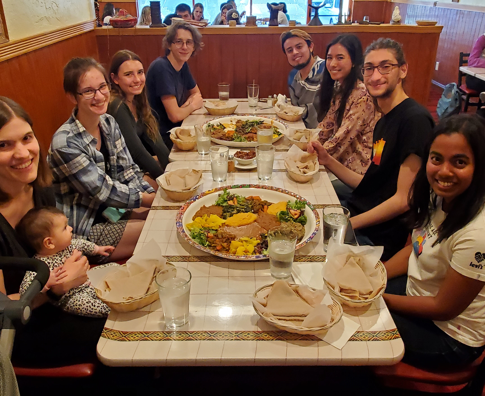

Vision and Goals
BII/CME Retreat
August 2023
Big Picture
How do cells interact with their physical environment?
Motility
How do cells move through their environment?
Mechanosensing
How do cells sense their environment?
We use the bacterium Escherichia coli as a model

E. coli swim by rotating helical flagella
 Slowed down 20X
Slowed down 20X

A nanoscale motor powers
swimming in bacteria


N. Wadhwa and H. C. Berg, Nature Rev Microbiol 2021;
How do bacteria interact with their physical environment?
Motility
- Shabduli - How do flagella adapt to changes in load?
- Eric - How do cells lacking flagellar propulsion spread over surfaces?
- TBD Postdoc (thanks, BII!) - Evolutionary relationships between rotary molecular motor structures and performance?
Mechanosensing
- Frances - How do surface properties influence bacteria adhesion?
- Carolina - How do bacteria sense surface contact?
- Luis, David - Why does osmotic stress depolarize the cell?
- TBD - How do bacteria sense flows?
- TBD - Building mechanosensing circuits in a synthetic cell
How do bacteria spread over surfaces?
"Evolution" of the Wadhwa lab
December 2022

April 2023